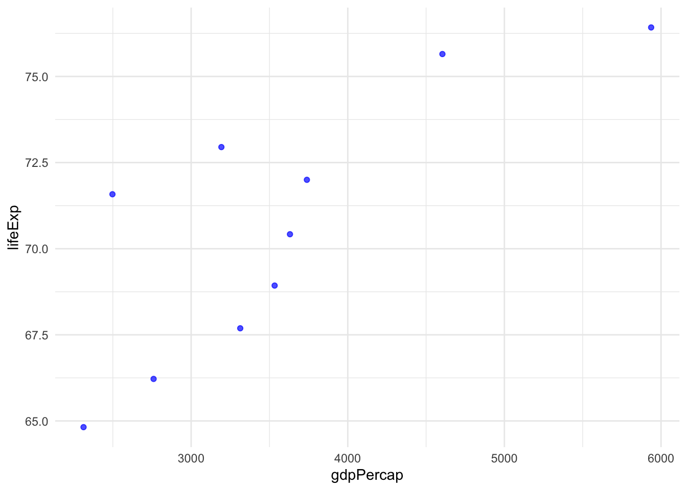
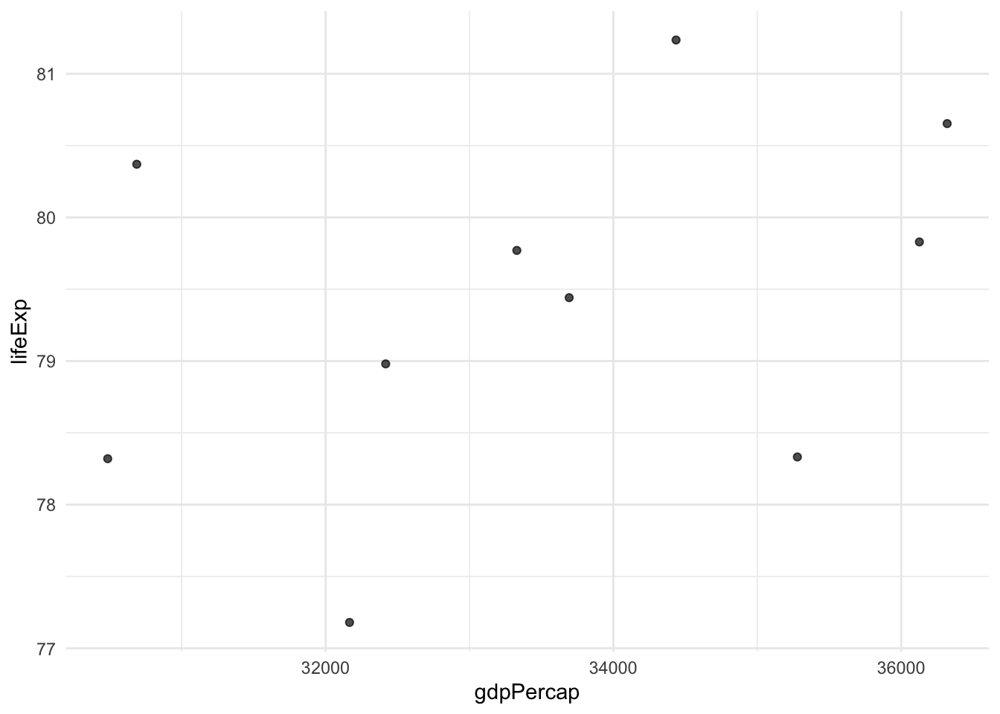
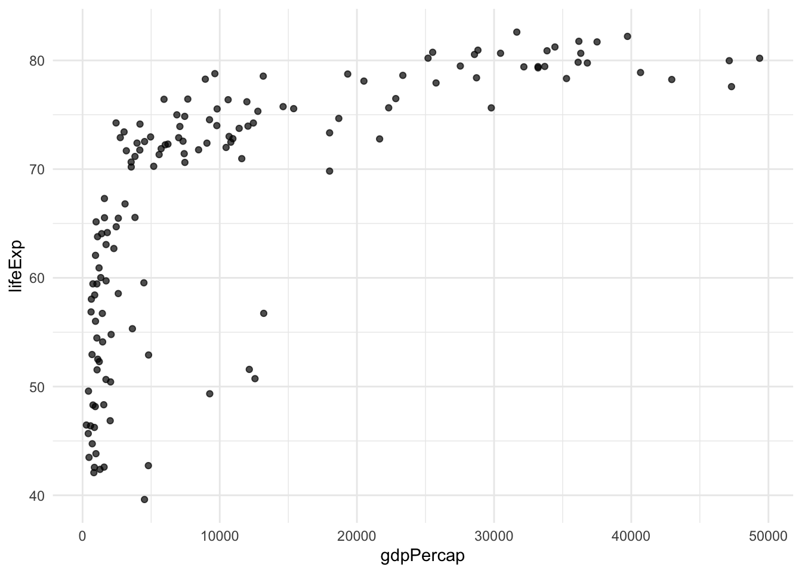
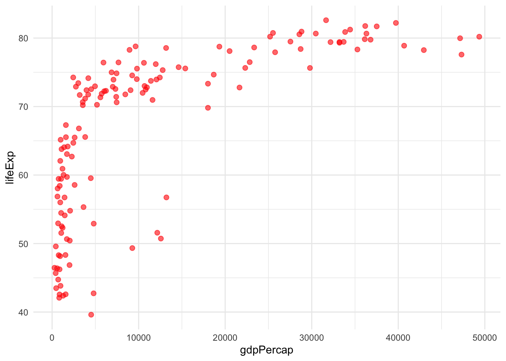
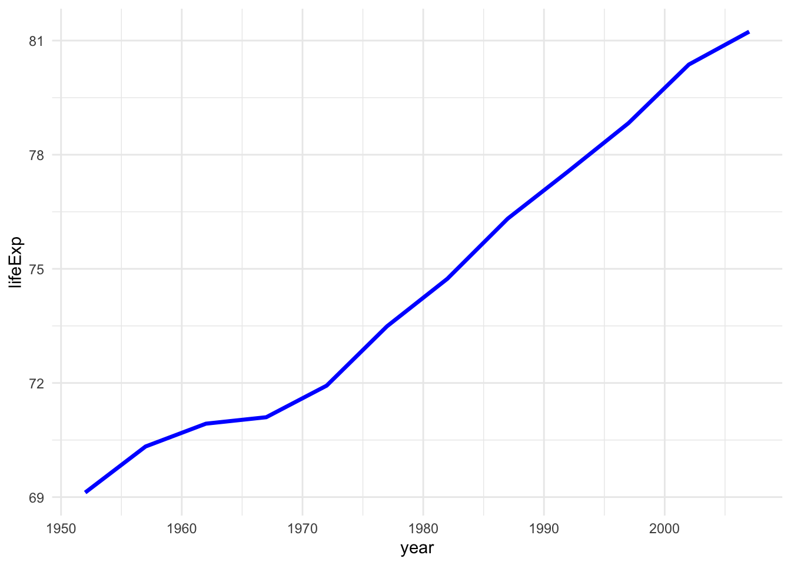

1 Why We Use Functions in R
For this session we are going to use the gapminder dataset.
The gapminder dataset contains information about life expectancy, population, and GDP per capita for countries around the world from 1952 to 2007. This dataset was made famous by Hans Rosling, a Swedish physician and statistician who used it in his captivating TED talks to challenge misconceptions about global development. Rosling’s animated visualisations of this data revealed surprising trends about how countries have progressed over time, showing that the world has become healthier and wealthier than many people realise.
The dataset is perfect for demonstrating data analysis techniques because it contains both categorical variables (country, continent) and numerical variables (year, life expectancy, population, GDP per capita), with enough complexity to showcase real-world data challenges while remaining manageable for learning purposes.
Before we start, let’s load the packages we’ll need:
Functions are the building blocks of reproducible analysis in R. They:
- Help you avoid repeating yourself (DRY principle)
- Make your code easier to read, test, and debug
- Allow you to generalise analyses to any dataset
- Enable collaboration and sharing of code
Today, we’ll learn how to write flexible functions that work with any data, and how to document them for others to use.
2 What the Basic Structure of a Function Looks Like
Here is the basic structure of a function in R:
# Function name assignment
my_function <- function(arg1, arg2) { # Arguments (parameters)
# Function body - the code that does the work
result <- arg1 + arg2
return(result) # Return value (optional)
}Let’s break down the key components:
-
Function name:
my_function- what you’ll call to use the function -
Assignment operator:
<-- assigns the function to a name -
function()keyword: tells R you’re creating a function -
Arguments:
arg1, arg2- the inputs your function accepts -
Function body: the code between
{}that does the actual work - Return value: what the function gives back (optional - R returns the last evaluated expression by default)
Here’s a simple working example:
# A function to calculate the area of a rectangle
calculate_area <- function(length, width) {
area <- length * width
return(area)
}
# Test our function
calculate_area(5, 3)[1] 153 Writing a Basic Function to Show the Structure
Let’s write a function that filters the gapminder dataset for countries with life expectancy above a given threshold. We’ll keep it simple and use a fixed column name:
filter_lifeExp <- function(data, threshold) {
data %>%
filter(lifeExp > threshold) %>%
slice_head(n = 10)
}
# Example usage
filter_lifeExp(gapminder, 60)# A tibble: 10 × 6
country continent year lifeExp pop gdpPercap
<fct> <fct> <int> <dbl> <int> <dbl>
1 Albania Europe 1962 64.8 1728137 2313.
2 Albania Europe 1967 66.2 1984060 2760.
3 Albania Europe 1972 67.7 2263554 3313.
4 Albania Europe 1977 68.9 2509048 3533.
5 Albania Europe 1982 70.4 2780097 3631.
6 Albania Europe 1987 72 3075321 3739.
7 Albania Europe 1992 71.6 3326498 2497.
8 Albania Europe 1997 73.0 3428038 3193.
9 Albania Europe 2002 75.7 3508512 4604.
10 Albania Europe 2007 76.4 3600523 5937.4 Writing a More Complex Function That Plots Data
Now let’s write a plotting function for the same data:
my_scatter_plot <- function(data) {
data %>%
ggplot(aes(x = gdpPercap, y = lifeExp)) +
geom_point(colour = "blue", alpha = 0.7) +
theme_minimal()
}
# Example usage
filtered <- filter_lifeExp(gapminder, 60)
my_scatter_plot(filtered)
Try changing the threshold in filter_lifeExp() to see how the plot changes.
But what if we wanted more flexible functions that can take many different column names? Or even work with a completely different dataset with different column names?
Our current functions are quite rigid - they only work with specific column names like lifeExp and gdpPercap. This limits their reusability!
5 Working with Column Names as Strings - [[]]
Before we dive into tidy evaluation, let’s look at some common scenarios. Normally, we make an explicit choice about which column we want to access in our data.
gapminder %>%
filter(lifeExp > 60) %>% # or .data$lifeExp
slice_head(n = 10)# A tibble: 10 × 6
country continent year lifeExp pop gdpPercap
<fct> <fct> <int> <dbl> <int> <dbl>
1 Albania Europe 1962 64.8 1728137 2313.
2 Albania Europe 1967 66.2 1984060 2760.
3 Albania Europe 1972 67.7 2263554 3313.
4 Albania Europe 1977 68.9 2509048 3533.
5 Albania Europe 1982 70.4 2780097 3631.
6 Albania Europe 1987 72 3075321 3739.
7 Albania Europe 1992 71.6 3326498 2497.
8 Albania Europe 1997 73.0 3428038 3193.
9 Albania Europe 2002 75.7 3508512 4604.
10 Albania Europe 2007 76.4 3600523 5937.What if you wanted to change that column programmatically and not update your code every time? First, let’s assume your column name is stored as a string.
The [[]] operator with .data directly looks up a column by its string name. Think of it as saying “go find the column with this exact name and give me its values.” It bypasses all the fancy tidy evaluation and just does a straightforward column lookup.
# Using [[]] with .data for explicit column access
column_name <- "lifeExp"
gapminder %>%
filter(.data[[column_name]] > 60) %>%
slice_head(n = 10)# A tibble: 10 × 6
country continent year lifeExp pop gdpPercap
<fct> <fct> <int> <dbl> <int> <dbl>
1 Albania Europe 1962 64.8 1728137 2313.
2 Albania Europe 1967 66.2 1984060 2760.
3 Albania Europe 1972 67.7 2263554 3313.
4 Albania Europe 1977 68.9 2509048 3533.
5 Albania Europe 1982 70.4 2780097 3631.
6 Albania Europe 1987 72 3075321 3739.
7 Albania Europe 1992 71.6 3326498 2497.
8 Albania Europe 1997 73.0 3428038 3193.
9 Albania Europe 2002 75.7 3508512 4604.
10 Albania Europe 2007 76.4 3600523 5937.This is particularly useful in functions where you might receive column names as strings:
# Function that takes a column name as a string
filter_by_string_name <- function(data, col_name_string, threshold) {
data %>%
filter(.data[[col_name_string]] > threshold)
}
# Test with column name as string
filter_by_string_name(gapminder, "gdpPercap", 30000) %>%
slice_head(n = 10)# A tibble: 10 × 6
country continent year lifeExp pop gdpPercap
<fct> <fct> <int> <dbl> <int> <dbl>
1 Australia Oceania 2002 80.4 19546792 30688.
2 Australia Oceania 2007 81.2 20434176 34435.
3 Austria Europe 2002 79.0 8148312 32418.
4 Austria Europe 2007 79.8 8199783 36126.
5 Belgium Europe 2002 78.3 10311970 30486.
6 Belgium Europe 2007 79.4 10392226 33693.
7 Canada Americas 2002 79.8 31902268 33329.
8 Canada Americas 2007 80.7 33390141 36319.
9 Denmark Europe 2002 77.2 5374693 32167.
10 Denmark Europe 2007 78.3 5468120 35278.Equally, it works with ggplot2, which is quite helpful because you often want to write generic plotting functions for multiple variables.
# Function to create a simple scatter plot
my_scatter_plot <- function(data, x_column, y_column) {
data %>%
ggplot(aes(x = .data[[x_column]], y = .data[[y_column]])) +
geom_point(alpha = 0.7) +
theme_minimal()
}
dat <- filter_by_string_name(gapminder, "gdpPercap", 30000) %>%
slice_head(n = 10)
# Create a plot
my_scatter_plot(dat, "gdpPercap", "lifeExp")
Try one of the other numeric variables, or reverse x_column and y_column.
Did you know that piping works with your own functions too?
gg <- gapminder %>%
filter_by_string_name("gdpPercap", 30000) %>%
slice_head(n = 10) %>%
my_scatter_plot("gdpPercap", "lifeExp")[[]] approach works, but…
The [[]] syntax with .data is explicit column access - you’re directly looking up columns by their string names. This works well when:
- You have column names as strings
- You want to be very explicit about data access
- You’re building functions that work with string-based specifications
But what if users want to pass unquoted column names like filter_function(data, lifeExp, 75) instead of filter_function(data, "lifeExp", 75)?
That’s where tidy evaluation comes in…
6 What is Tidy Evaluation?
Tidy evaluation is the system that allows tidyverse functions to work with unquoted column names. It’s what makes this possible:
# This works - no quotes around column names despite `year` not being in your environment!
gapminder %>%
filter(year == 2007) %>%
select(country, continent, lifeExp, gdpPercap)# A tibble: 142 × 4
country continent lifeExp gdpPercap
<fct> <fct> <dbl> <dbl>
1 Afghanistan Asia 43.8 975.
2 Albania Europe 76.4 5937.
3 Algeria Africa 72.3 6223.
4 Angola Africa 42.7 4797.
5 Argentina Americas 75.3 12779.
6 Australia Oceania 81.2 34435.
7 Austria Europe 79.8 36126.
8 Bahrain Asia 75.6 29796.
9 Bangladesh Asia 64.1 1391.
10 Belgium Europe 79.4 33693.
# ℹ 132 more rows6.1 The Problem: Functions Don’t Work with dplyr
The challenge comes when you try to write your own functions. Let’s see what happens:
# This function won't work as expected
my_filter <- function(data, column_name, value) {
data %>%
filter(column_name == value) # This doesn't work!
}
# Try to use it
my_filter(gapminder, year, 2007)Error in `filter()`:
ℹ In argument: `column_name == value`.
Caused by error in `column_name == value`:
! comparison (==) is possible only for atomic and list typesThe function fails because column_name is treated as the literal text “column_name”, not as the variable name we passed in (year). This is where tidy evaluation and data masking comes to the rescue!
7 Data Masking
Data masking makes column names in your data frame available as if they were regular variables. It is what allows you to write filter(gapminder, year == 2007) instead of filter(gapminder, gapminder$year == 2007). The column name year gets “masked” so it appears to exist in your current environment.
This is why you can write:
# A tibble: 142 × 6
country continent year lifeExp pop gdpPercap
<fct> <fct> <int> <dbl> <int> <dbl>
1 Afghanistan Asia 2007 43.8 31889923 975.
2 Albania Europe 2007 76.4 3600523 5937.
3 Algeria Africa 2007 72.3 33333216 6223.
4 Angola Africa 2007 42.7 12420476 4797.
5 Argentina Americas 2007 75.3 40301927 12779.
6 Australia Oceania 2007 81.2 20434176 34435.
7 Austria Europe 2007 79.8 8199783 36126.
8 Bahrain Asia 2007 75.6 708573 29796.
9 Bangladesh Asia 2007 64.1 150448339 1391.
10 Belgium Europe 2007 79.4 10392226 33693.
# ℹ 132 more rowsYou’ve been using data masking every time you use dplyr functions - you just didn’t know it had a name!
8 The Curly-Curly Operator {{}}
The curly-curly operator {{}} is the solution to our function problem!
Conceptually, {{}} captures and forwards whatever the user passed to your function. Think of it as a “pass-through” mechanism - it takes the unquoted column name the user gave you (like lifeExp) and forwards it to dplyr functions as if you had typed that column name directly in the code.
{{}} do?
The {{}} operator (called “curly-curly”) is like a magic wrapper that:
- Captures the column name you pass to your function
- Passes it through to dplyr functions correctly
- Makes it work just like typing the column name directly
Think of {column_name} as saying “use whatever column name the user gave me here.”
# Fixed version using curly-curly
my_filter <- function(data, column_name, value) {
data %>%
filter({{column_name}} == value) # {{}} makes this work!
}
# Now it works!
my_filter(gapminder, year, 2007) %>%
slice_head(n = 10)# A tibble: 10 × 6
country continent year lifeExp pop gdpPercap
<fct> <fct> <int> <dbl> <int> <dbl>
1 Afghanistan Asia 2007 43.8 31889923 975.
2 Albania Europe 2007 76.4 3600523 5937.
3 Algeria Africa 2007 72.3 33333216 6223.
4 Angola Africa 2007 42.7 12420476 4797.
5 Argentina Americas 2007 75.3 40301927 12779.
6 Australia Oceania 2007 81.2 20434176 34435.
7 Austria Europe 2007 79.8 8199783 36126.
8 Bahrain Asia 2007 75.6 708573 29796.
9 Bangladesh Asia 2007 64.1 150448339 1391.
10 Belgium Europe 2007 79.4 10392226 33693.Let’s try a few more simple examples:
# Function to select and arrange data
my_select_arrange <- function(data, column_name) {
data %>%
select(country, year, {{column_name}}) %>%
arrange({{column_name}})
}
# Test it out
my_select_arrange(gapminder, lifeExp) %>%
slice_head(n = 10)# A tibble: 10 × 3
country year lifeExp
<fct> <int> <dbl>
1 Rwanda 1992 23.6
2 Afghanistan 1952 28.8
3 Gambia 1952 30
4 Angola 1952 30.0
5 Sierra Leone 1952 30.3
6 Afghanistan 1957 30.3
7 Cambodia 1977 31.2
8 Mozambique 1952 31.3
9 Sierra Leone 1957 31.6
10 Burkina Faso 1952 32.0# Function to create a simple summary
my_summary <- function(data, group_column, summary_column) {
data %>%
group_by({{group_column}}) %>%
summarise(
average = mean({{summary_column}}, na.rm = TRUE),
count = n(),
.groups = "drop"
)
}
# Test with different combinations
my_summary(gapminder, continent, lifeExp)# A tibble: 5 × 3
continent average count
<fct> <dbl> <int>
1 Africa 48.9 624
2 Americas 64.7 300
3 Asia 60.1 396
4 Europe 71.9 360
5 Oceania 74.3 24
8.1 Using {{}} with ggplot2
The curly-curly operator also works with ggplot2:
# Function to create a simple scatter plot
my_scatter_plot <- function(data, x_column, y_column) {
data %>%
ggplot(aes(x = {{x_column}}, y = {{y_column}})) +
geom_point(alpha = 0.7) +
theme_minimal()
}
# Create a plot
my_scatter_plot(gapminder %>% filter(year == 2007), gdpPercap, lifeExp)
{{}} works everywhere
The {{}} operator works with:
-
dplyr functions:
filter(),select(),mutate(),group_by(), etc. -
ggplot2: inside
aes()for aesthetics -
Any tidyverse function that uses tidy evaluation This consistency makes it easy to remember - just wrap your column arguments in
{{}}and they’ll work!
9 Using ... for Ultimate Flexibility
The dot-dot-dot (...) parameter is another powerful tool for creating flexible functions. It allows your function to accept any number of additional arguments and pass them along to other functions.
... do?
The ... parameter (called “dot-dot-dot” or “ellipsis”) allows your function to:
- Accept unlimited arguments that you don’t need to specify in advance
- Pass arguments through to other functions without knowing what they are
- Make wrapper functions that extend existing functionality
Think of ... as saying “accept whatever else the user wants to pass along.”
9.1 Example 1: Passing Arguments to ggplot2
Let’s create a plotting function that can accept any additional ggplot2 arguments:
# Function that accepts additional ggplot arguments via ...
flexible_scatter <- function(data, x_col, y_col, ...) {
data %>%
ggplot(aes(x = {{x_col}}, y = {{y_col}})) +
geom_point(...) + # Pass ... to geom_point()
theme_minimal()
}
# Now we can pass any geom_point() arguments
flexible_scatter(gapminder %>% filter(year == 2007),
gdpPercap, lifeExp,
colour = "red", size = 2, alpha = 0.6)
9.2 Example 2: Flexible Summary Function
Here’s a summary function that can accept additional arguments for the summary functions:
# Function that passes ... to summary functions
flexible_summary <- function(data, group_col, summary_col, ...) {
data %>%
group_by({{group_col}}) %>%
summarise(
mean_val = mean({{summary_col}}, ...), # Pass ... to mean()
median_val = median({{summary_col}}, ...), # Pass ... to median()
count = n(),
.groups = "drop"
)
}
# Test with na.rm = TRUE passed through ...
gapminder_with_na <- gapminder
gapminder_with_na$lifeExp[1:5] <- NA # Add some missing values
flexible_summary(gapminder_with_na, continent, lifeExp, na.rm = TRUE)# A tibble: 5 × 4
continent mean_val median_val count
<fct> <dbl> <dbl> <int>
1 Africa 48.9 47.8 624
2 Americas 64.7 67.0 300
3 Asia 60.4 62.0 396
4 Europe 71.9 72.2 360
5 Oceania 74.3 73.7 24
9.3 Example 3: Combining {{}} and ...
You can use both {{}} and ... in the same function for maximum flexibility:
# Ultimate flexible plotting function
ultimate_plot <- function(data, x_col, y_col, plot_type = "point", ...) {
p <- data %>%
ggplot(aes(x = {{x_col}}, y = {{y_col}}))
if (plot_type == "point") {
p <- p + geom_point(...)
} else if (plot_type == "line") {
p <- p + geom_line(...)
}
p + theme_minimal()
}
# Use with different geom arguments
ultimate_plot(gapminder %>% filter(country == "Australia"),
year, lifeExp,
plot_type = "line",
colour = "blue", linewidth = 1.2)
...
Use ... when you want to:
- Wrap existing functions and allow users to pass additional arguments
- Create flexible plotting functions that accept aesthetic parameters
-
Build summary functions that can handle different options (like
na.rm) - Make your functions extensible without knowing all possible future arguments
Be careful: ... can make debugging harder since you don’t know what arguments might be passed!
10 Documenting Your Functions
Documenting your functions is essential for sharing and future use. Good documentation helps others (and future you!) understand:
- What the function does
- What inputs it expects
- What it returns
- How to use it
The standard in R is to use roxygen2 comments above your function. These special comments start with #' and use specific tags:
RStudio shortcuts for adding roxygen2 headers:
-
Windows/Linux:
Ctrl + Alt + Shift + R -
Mac:
Cmd + Option + Shift + R
Place your cursor anywhere inside your function and use this shortcut to automatically generate a roxygen2 template with all the @param tags for your function arguments!
#' Filter a data frame by a column and threshold
#'
#' This function filters a data frame to show only rows where the specified
#' column values are above a given threshold, returning the top 3 results.
#'
#' @param data A data frame to filter
#' @param column_name Column name as a string (e.g., "lifeExp")
#' @param threshold Numeric threshold value for filtering
#' @return A filtered data frame with up to 3 rows
#' @examples
#' filter_gapminder(gapminder, "lifeExp", 75)
#' filter_gapminder(gapminder, "gdpPercap", 30000)
filter_gapminder <- function(data, column_name, threshold) {
data %>%
filter(.data[[column_name]] > threshold) %>%
slice_head(n = 10)
}11 Summary
Today we’ve covered:
- Basic function structure - the essential components of any R function
-
String-based column access - using
.data[[]]for programmatic column selection - Tidy evaluation - understanding how tidyverse functions work with unquoted names
- Data masking - the system that makes column names available as variables
-
The curly-curly operator
{{}}- making your functions work seamlessly with tidyverse - Documentation - using roxygen2 to create professional function documentation
11.1 Key Takeaways
- Use
{{}}when you want users to pass unquoted column names - Use
.data[[]]when you have column names as strings - Always document your functions with roxygen2 comments
- Test your functions with different datasets to ensure flexibility
11.2 Practice Exercises
Try creating your own functions that:
- Filter data based on multiple conditions using
{{}} - Create different types of plots with flexible aesthetics
- Calculate custom summaries with grouping variables
- Include proper roxygen2 documentation
Remember: the best functions are flexible, well-documented, and solve real problems in your analysis workflow!